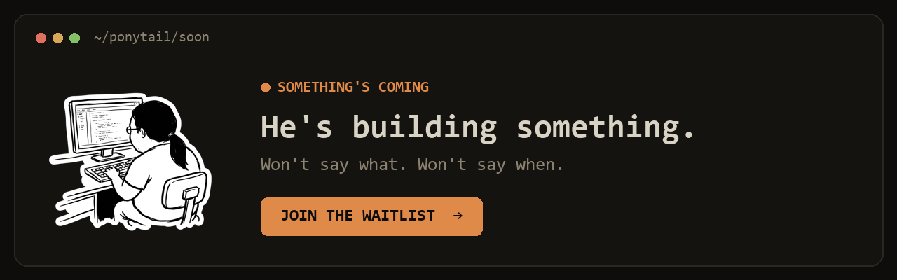

Ponytail
A one-line plugin that makes your AI coding agent write less code - it thinks like the laziest senior developer in the room.
Install Ponytail in Claude Code, Cursor, Codex or 20 other agents and it rewrites the agent's habits: before touching a file it asks 'can I delete something instead?' and works down a seven-rung ladder from do-nothing to write-new-code.

How does it work?
AI coding agents default to writing more code. Ask for a feature and you get a new file, new functions, new abstractions - even when an existing tool or a config change would have done the job.
You ask Claude Code to add date formatting. Instead of using a built-in method, it writes a custom date formatter from scratch.
You install Ponytail as a plugin - one command, no config.
npx skills add dietrichgebert/ponytail in Claude Code, or the equivalent for Cursor, Codex, Windsurf or any of 20+ supported agents.
Nothing changes about how you talk to your agent. You keep asking for features the same way.
Same prompts as before. Ponytail works in the background, changing how the agent thinks before it writes.
It injects a decision ladder into the agent's thinking: before writing code, try doing nothing, then deleting, then refactoring, then configuring, then using a library, then copying an existing pattern - and only then write something new.
- Rung 1: Can you solve it with no code at all? (A setting, a flag, a documentation fix)
- Rung 2: Can you delete code to fix it? (Remove dead code, simplify a conditional)
- Rung 3-6: Refactor, config change, library, or copy an existing pattern in the codebase
- Rung 7: Only now, write new code - and keep it minimal
You ask for a retry mechanism. Without Ponytail, the agent writes a custom retry wrapper. With it, the agent finds that the HTTP library already has a retry option and enables it with one line.
Smaller diffs, fewer new files, and changes that use what the codebase already has.
- Less code per taskThe corrected benchmark shows about 54% less code output on average across test cases
- Faster, cheaper agent runsAbout 20% cheaper and 27% faster per task, because the agent thinks more and writes less
- Changes that fit the existing codebaseThe agent reuses patterns already in your code instead of inventing parallel approaches
What changes for me?
Without it
- Your coding agent writes new code by default, even when an existing tool, a config flag or a deletion would solve the problem.
- You spend time reviewing and cleaning up unnecessary abstractions the agent introduced.
With it
- The agent walks a seven-rung ladder - from 'do nothing' to 'write new code' - and stops at the first rung that works.
- Diffs are smaller, reviews are faster, and the agent reuses what the codebase already has.
How hard is it to try?
Effort
- Install it in Claude Code:
npx skills add dietrichgebert/ponytail(or the matching command for your agent - Cursor, Codex, Windsurf, etc.). - Ask your agent to do a task you've done before - something where it usually writes too much. Compare the diff to what it would have done without Ponytail.
- Try asking for a feature that could be solved with a config change or a library - see if the agent finds the simpler path.
What it takes on your computer
- Space on disk
- 1.3 MB npm package, zero dependencies.
- Memory while it runs
- No measurable overhead. It's a set of rules injected into the agent's context, not a running process.
- Runs on
- Any system where your AI coding agent runs. Supports 20+ agents: Claude Code, Cursor, Codex, Windsurf, Gemini CLI, Zed, and more.
Paste this into Claude Code. It runs your safety scan first, then a 10-minute test.
/skillspector https://github.com/DietrichGebert/ponytail If that scan passes: install the skill, run 3 coding tasks (one that could be solved by deletion, one by config, one that needs new code), and compare the output to what the agent writes without Ponytail. Report the diff sizes. 10 minutes max.
Should I?
Great if you...
- You use an AI coding agent and it writes too much code - new files, new abstractions, custom solutions when a built-in would do
- You want smaller diffs and faster code reviews without changing how you prompt
Skip it if...
- You're working on a greenfield project where most code genuinely is new - the ladder is less useful when there's nothing to reuse
- You prefer full control over your agent's system prompt and don't want a plugin modifying it
Instead, you could look at
- A custom CLAUDE.md ruleYou can write your own 'prefer minimal code' instruction in your project's CLAUDE.md. Less structured than the seven-rung ladder, but fully in your control and free.
- ECC (Everything Claude Code)A much larger plugin collection (261 skills). Includes code-reduction heuristics among many other things, but it's a full framework rather than a single focused tool.
Is it safe?
- Security advisories: 0GitHub's advisory list, checked Oct 2
- Searches for CVEs, vulnerabilities, malware and scams11 results read, including the national CVE database: nothing found
- Are the stars earned?151K stars, 75 contributors, 224 commits
Issue #199 flags a caret range on @modelcontextprotocol/sdk (^1.19.0); fresh installs resolve to the patched 1.26+. Issue #735 is about a trojanized clone by another account, not this repo.
Watch out for
- The '54% less code' claim was corrected from 80-94%. An external benchmark by Scott Logic showed the original numbers were inflated. The author rebuilt the benchmark and published the corrected figure. Credit for transparency, but check claims carefully.
- It's a ruleset, not magic. Ponytail changes how the agent thinks, but a bad prompt or a complex requirement can still produce bloated code.
- Design-system blind spot. One reviewer noted Ponytail may steer agents toward native HTML inputs when a project uses a component library like shadcn or Material UI.
- One main author. Active development, but sustained by a single maintainer.
Who's using it, and for what?
Ponytail has 151K stars and 72K npm downloads/month, but individual named case studies with specific shipped projects are sparse. Colin Eberhardt (CTO, Scott Logic) rigorously benchmarked it and filed an issue that led to corrected claims.
Colin Eberhardt, CTO at Scott Logic
Benchmarked Ponytail rigorously, filed GitHub issue #126 showing the original 80-94% claim was inflated by a chatty baseline. This led the author to rebuild the benchmark entirely, landing on the corrected 54% figure.
Who's talking about it
Sources
- Ponytail on GitHub (README, ladder, benchmark), Oct 2
- InfoQ: Ponytail benchmark correction, Aug 5
- Flavio Copes: A Deep Dive into Ponytail, Sep 17
- HN discussion: Ponytail, Jul undefined
- DEV Community: Ponytail review, Jun 25